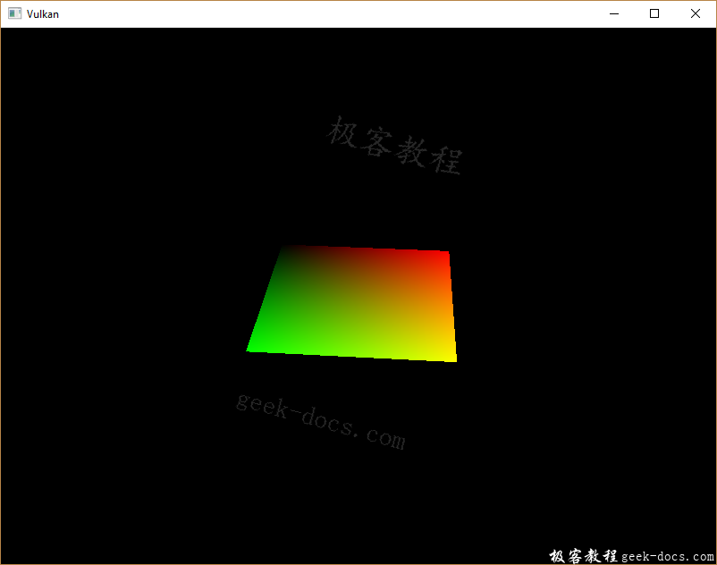
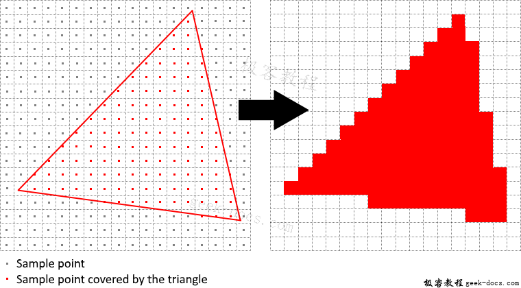
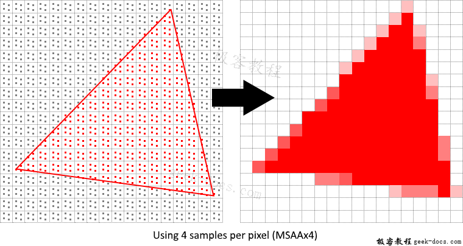
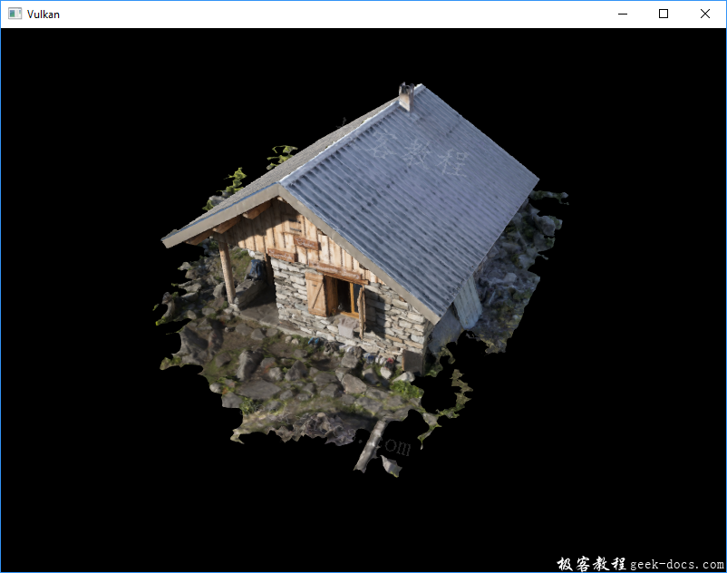
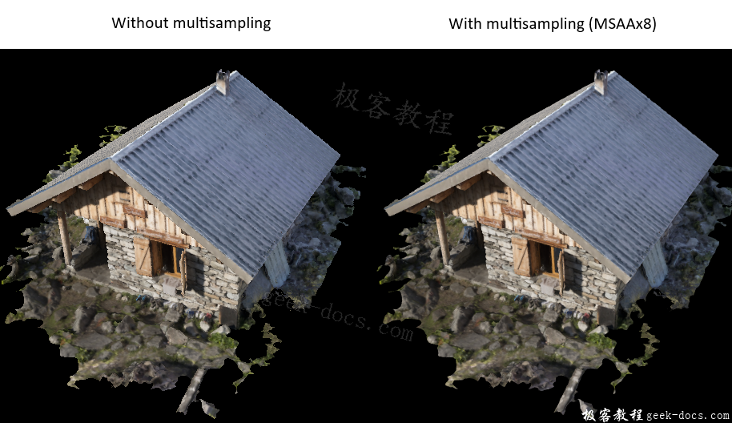
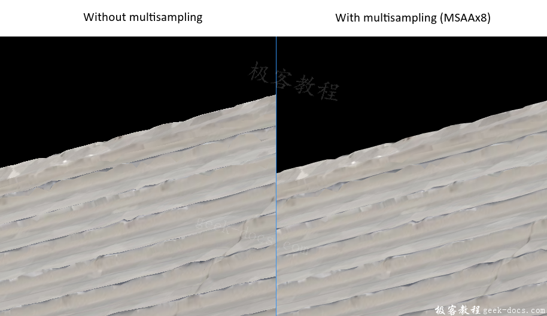
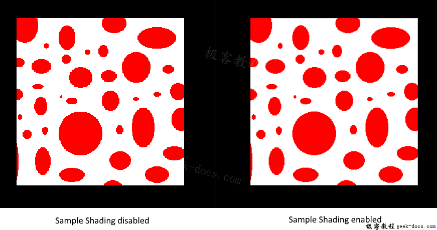

Vulkan 多重采样(Multisampling)，我们的程序现在加载了多层LOD的纹理，它修复了对象远离观察者时的锯齿问题。图像显得更加平滑，但是仔细观察，你会发现在绘制的几何图形的边缘上有锯齿状的图案。这在我们早期的一个程序中尤其明显，当我们渲染一个四边形：

这种不受欢迎的效果被称为“锯齿”，它是由于可供渲染的像素数量不足导致的结果。由于没有无限分辨率的显示器，总能看到一些锯齿。有很多方法可以解决这个问题，在本章中，我们将重点介绍其中一种比较流行的方法:多采样抗锯齿(Multisample anti-aliasing MSAA)。
在普通渲染中，像素的颜色是基于一个单一的采样点来决定的，在大多数情况下，这个采样点是屏幕上目标像素的中心。如果绘制的线部分经过某个像素，但是没有覆盖到采样点，那么该像素会是空白，导致锯齿状的“楼梯”效果。

MSAA所做的是，对每个像素使用多个采样点(顾名思义)来确定其最终颜色。正如人们所期望的那样，采样越多，效果越好，但是它的计算开销也更大。

现实生活中，我们重点使用最大可用采样量。根据您的应用程序，这可能不是最好的方法，如果最终结果满足您的质量需求，为了提高性能，最好使用更少的采样。
获取可用采样量
首先，我们查查我们的硬件能用多少采样量。大多数现代gpu支持至少8个采样量，但是并非所有地方都是这样，我们将添加一个新的类成员来跟踪它:
VkSampleCountFlagBits msaaSamples = VK_SAMPLE_COUNT_1_BIT;
默认情况下，每个像素只使用一个采样点，这样就不会有重采样，在这种情况下，最终图像将保持不变。可以从与我们选择的物理设备相关的VkPhysicalDeviceProperties中提取准确的最大采样数量。我们使用的是深度缓冲区，所以我们必须同时考虑颜色和深度的采样数量—其中较小值将是我们能支持的最大值。添加一个函数为我们提取这些信息:
VkSampleCountFlagBits getMaxUsableSampleCount() {
VkPhysicalDeviceProperties physicalDeviceProperties;
vkGetPhysicalDeviceProperties(physicalDevice, &physicalDeviceProperties); VkSampleCountFlags counts = std::min(physicalDeviceProperties.limits.framebufferColorSampleCounts, physicalDeviceProperties.limits.framebufferDepthSampleCounts);
if (counts & VK_SAMPLE_COUNT_64_BIT) { return VK_SAMPLE_COUNT_64_BIT; }
if (counts & VK_SAMPLE_COUNT_32_BIT) { return VK_SAMPLE_COUNT_32_BIT; }
if (counts & VK_SAMPLE_COUNT_16_BIT) { return VK_SAMPLE_COUNT_16_BIT; }
if (counts & VK_SAMPLE_COUNT_8_BIT) { return VK_SAMPLE_COUNT_8_BIT; }
if (counts & VK_SAMPLE_COUNT_4_BIT) { return VK_SAMPLE_COUNT_4_BIT; }
if (counts & VK_SAMPLE_COUNT_2_BIT) { return VK_SAMPLE_COUNT_2_BIT; } return VK_SAMPLE_COUNT_1_BIT;
}
现在，我们将使用这个函数在物理设备期间设置msaaSamples变量。为此，我们需要稍微修改pickPhysicalDevice函数:
void pickPhysicalDevice() {
...
for (const auto& device : devices) {
if (isDeviceSuitable(device)) {
physicalDevice = device;
msaaSamples = getMaxUsableSampleCount();
break;
}
}
...
}
设置渲染目标
在MSAA中，每个像素都在离屏缓冲区中采样，然后将缓冲区呈现给屏幕。这个新的缓冲区与我们渲染的常规图像略有不同——它们必须能够存储每个像素的多个样本。一旦创建了多采样缓冲区，就必须将其解析为默认的帧缓存(每个像素只存储一个样本)。这就是为什么我们必须创建一个额外的渲染目标，并修改我们当前的绘图过程。我们只需要一个渲染目标，因为同一时间只能有1个绘制操作，就像深度缓冲区一样。添加以下类成员:
...
VkImage colorImage;
VkDeviceMemory colorImageMemory;
VkImageView colorImageView;
...
这个新colorImage必须存储每个像素所需的样本数量，因此我们需要在图像创建过程中将这个数字传递给VkImageCreateInfo。通过添加一个numSamples参数来修改createImage函数:
void createImage(uint32_t width, uint32_t height, uint32_t mipLevels, VkSampleCountFlagBits numSamples, VkFormat format, VkImageTiling tiling, VkImageUsageFlags usage, VkMemoryPropertyFlags properties, VkImage& image, VkDeviceMemory& imageMemory) {
...
imageInfo.samples = numSamples;
...
现在，使用VK_SAMPLE_COUNT_1_BIT更新对这个函数的所有调用——随着我们逐步的实现，我们会用合适的值替代它:
createImage(swapChainExtent.width, swapChainExtent.height, 1, VK_SAMPLE_COUNT_1_BIT, depthFormat, VK_IMAGE_TILING_OPTIMAL, VK_IMAGE_USAGE_DEPTH_STENCIL_ATTACHMENT_BIT, VK_MEMORY_PROPERTY_DEVICE_LOCAL_BIT, depthImage, depthImageMemory);
...
createImage(texWidth, texHeight, mipLevels, VK_SAMPLE_COUNT_1_BIT, VK_FORMAT_R8G8B8A8_UNORM, VK_IMAGE_TILING_OPTIMAL, VK_IMAGE_USAGE_TRANSFER_SRC_BIT | VK_IMAGE_USAGE_TRANSFER_DST_BIT | VK_IMAGE_USAGE_SAMPLED_BIT, VK_MEMORY_PROPERTY_DEVICE_LOCAL_BIT, textureImage, textureImageMemory);
现在我们将创建一个多采样的颜色缓冲区。添加createColorResources函数，需要注意的是，我们在这里使用msaaSamples作为createImage的函数参数。我们只使用了一个mip级别，因为这是由Vulkan规范强制规定。此外，这个颜色缓冲区不需要mipmaps，因为它不会被用作纹理:
void createColorResources() {
VkFormat colorFormat = swapChainImageFormat; createImage(swapChainExtent.width, swapChainExtent.height, 1, msaaSamples, colorFormat, VK_IMAGE_TILING_OPTIMAL, VK_IMAGE_USAGE_TRANSIENT_ATTACHMENT_BIT | VK_IMAGE_USAGE_COLOR_ATTACHMENT_BIT, VK_MEMORY_PROPERTY_DEVICE_LOCAL_BIT, colorImage, colorImageMemory);
colorImageView = createImageView(colorImage, colorFormat, VK_IMAGE_ASPECT_COLOR_BIT, 1); transitionImageLayout(colorImage, colorFormat, VK_IMAGE_LAYOUT_UNDEFINED, VK_IMAGE_LAYOUT_COLOR_ATTACHMENT_OPTIMAL, 1);
}
为了保持一致性，在createDepthResources之前调用如下函数:
void initVulkan() {
...
createColorResources();
createDepthResources();
...
}
您可能注意到，新创建的color image使用了从VK_IMAGE_LAYOUT_UNDEFINED到VK_IMAGE_LAYOUT_COLOR_ATTACHMENT_OPTIMAL的转换路径，这是我们需要处理的新情况。让我们更新transitionImageLayout函数来考虑这一点:
void transitionImageLayout(VkImage image, VkFormat format, VkImageLayout oldLayout, VkImageLayout newLayout, uint32_t mipLevels) {
...
else if (oldLayout == VK_IMAGE_LAYOUT_UNDEFINED && newLayout == VK_IMAGE_LAYOUT_COLOR_ATTACHMENT_OPTIMAL) {
barrier.srcAccessMask = 0;
barrier.dstAccessMask = VK_ACCESS_COLOR_ATTACHMENT_READ_BIT | VK_ACCESS_COLOR_ATTACHMENT_WRITE_BIT;
sourceStage = VK_PIPELINE_STAGE_TOP_OF_PIPE_BIT;
destinationStage = VK_PIPELINE_STAGE_COLOR_ATTACHMENT_OUTPUT_BIT;
}
else {
throw std::invalid_argument("unsupported layout transition!");
}
...
}
现在我们已经有了一个多采样的颜色缓冲区，是时候考虑深度了。修改createDepthResources，更新深度缓冲区使用的样本数量:
void createDepthResources() {
...
createImage(swapChainExtent.width, swapChainExtent.height, 1, msaaSamples, depthFormat, VK_IMAGE_TILING_OPTIMAL, VK_IMAGE_USAGE_DEPTH_STENCIL_ATTACHMENT_BIT, VK_MEMORY_PROPERTY_DEVICE_LOCAL_BIT, depthImage, depthImageMemory);
...
}
我们现在已经创建了一些新Vulkan资源，所以别忘了在需要的时候释放它们：
void cleanupSwapChain() {
vkDestroyImageView(device, colorImageView, nullptr);
vkDestroyImage(device, colorImage, nullptr);
vkFreeMemory(device, colorImageMemory, nullptr);
...
}
更新recreateSwapChain，窗口的大小调整时，使新的color image可以重新创建在正确的分辨率:
void recreateSwapChain() {
...
createGraphicsPipeline();
createColorResources();
createDepthResources();
...
}
上面是MSAA设置阶段，现在我们需要开始在图形管道、帧缓存、渲染通道中使用这个新资源，并看看结果!
添加新附件
让我们先来处理渲染通道，修改createRenderPass、更新颜色和深度附件创建信息结构:
void createRenderPass() {
...
colorAttachment.samples = msaaSamples;
colorAttachment.finalLayout = VK_IMAGE_LAYOUT_COLOR_ATTACHMENT_OPTIMAL;
...
depthAttachment.samples = msaaSamples;
...
你会注意到，我们已经将finalLayout从VK_IMAGE_LAYOUT_PRESENT_SRC_KHR修改为VK_IMAGE_LAYOUT_COLOR_ATTACHMENT_OPTIMAL。这是因为多采样图像不能直接呈现。我们首先需要将它们解析为一个常规图像。这个要求不适用于深度缓冲区，因为它在任何时候都不会显示。因此，我们只需要添加一个新的颜色附件，即所谓的解析附件:
...
VkAttachmentDescription colorAttachmentResolve = {};
colorAttachmentResolve.format = swapChainImageFormat;
colorAttachmentResolve.samples = VK_SAMPLE_COUNT_1_BIT;
colorAttachmentResolve.loadOp = VK_ATTACHMENT_LOAD_OP_DONT_CARE;
colorAttachmentResolve.storeOp = VK_ATTACHMENT_STORE_OP_STORE;
colorAttachmentResolve.stencilLoadOp = VK_ATTACHMENT_LOAD_OP_DONT_CARE;
colorAttachmentResolve.stencilStoreOp = VK_ATTACHMENT_STORE_OP_DONT_CARE;
colorAttachmentResolve.initialLayout = VK_IMAGE_LAYOUT_UNDEFINED;
colorAttachmentResolve.finalLayout = VK_IMAGE_LAYOUT_PRESENT_SRC_KHR;
...
现在需要指示渲染通道将多采样的彩色图像解析为常规附件。创建一个新的附件引用，指向作为解析目标的颜色缓冲区:
...
VkAttachmentReference colorAttachmentResolveRef = {};
colorAttachmentResolveRef.attachment = 2;
colorAttachmentResolveRef.layout = VK_IMAGE_LAYOUT_COLOR_ATTACHMENT_OPTIMAL;
...
设置preolveattachments子结构体成员以指向新创建的附件引用。这足以让渲染通道定义一个多采样解析操作，让我们渲染图像到屏幕:
...
subpass.pResolveAttachments = &colorAttachmentResolveRef;
...
现在使用新的颜色附件更新渲染通道信息结构体:
...
std::array<VkAttachmentDescription, 3> attachments = {colorAttachment, depthAttachment, colorAttachmentResolve};
...
渲染通道就绪后，修改createframebuffer并将新的图像视图添加到列表中:
void createFrameBuffers() {
...
std::array<VkImageView, 3> attachments = {
colorImageView,
depthImageView,
swapChainImageViews[i]
};
...
}
最后，通过修改createGraphicsPipeline，告诉新建管道使用多个采样:
void createGraphicsPipeline() {
...
multisampling.rasterizationSamples = msaaSamples;
...
}
现在运行你的程序，结果如下图所示：

就像mipmapping一样，这种差异可能不会马上显现出来。仔细一看，你会发现屋顶上的边缘不再是锯齿状的，而且整个图像看起来比原来的更加平滑。

当近距离观察其中一个边缘时，这种差异更加明显:

质量提升
我们当前的MSAA实现有一定的局限性，这可能会影响更精细场景中输出图像的质量。例如，我们目前没有解决着色器产生锯齿的潜在问题，即MSAA只针对几何体的边缘进行平滑，没有对内部填充进行平滑。这可能会导致一种问题，当你得到一个光滑的多边形渲染在屏幕上时，在高对比度的颜色下，贴图仍旧有锯齿。解决这个问题的一种方法是启用Sample Shading，这将进一步提高图像质量，只是性能会有所下降:
void createLogicalDevice() {
...
deviceFeatures.sampleRateShading = VK_TRUE; // enable sample shading feature for the device
...
}void createGraphicsPipeline() {
...
multisampling.sampleShadingEnable = VK_TRUE; // enable sample shading in the pipeline
multisampling.minSampleShading = .2f; // min fraction for sample shading; closer to one is smoother
...
}
在本例中，我们将禁用采用着色，但在某些场景中，质量改进是显而易见的:

小结
前面做了很多工作，但是现在您终于为Vulkan学习打下了良好的基础。您现在所掌握的Vulkan基本原理的知识应该足以开始探索更多的领域，比如:
- Push constants
- Instanced rendering
- Dynamic uniforms
- Separate images and sampler descriptors
- Pipeline cache
- Multi-threaded command buffer generation
- Multiple subpasses
- Compute shaders
当前的程序可以用多种方式扩展，如添加Blinn-Phong光照、后处理效果和阴影映射。您应该能够从其他API的教程中了解这些特效是如何工作的，因为尽管Vulkan别具一格，但许多概念仍然是相同的。